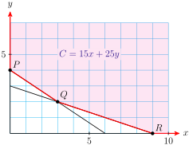

Section 8.5 Linear Programming
The term linear programming was coined in the late 1940s. It describes a relatively young branch of mathematics, compared to subjects such as Euclidean geometry, where the major ideas were already well understood 23 centuries ago. (The Greek mathematician Euclid wrote what can be considered the first geometry textbook about 300 B.C.) Business managers routinely solve linear programming problems for purchasing and marketing strategy, so it is possible that linear programming affects your daily life as much as any other branch of mathematics.
Subsection The Objective Function and Constraints
TrailGear would like to maximize its profit from selling hiking boots. The company produces two kinds of hiking boots, a Weekender model, on which it makes $\(8\) profit per pair, and a Sierra model, on which it makes $\(10\) profit per pair. How many of each model should TrailGear produce each week in order to maximize its profit?
If we let \(x\) represent the number of Weekender boots and \(y\) the number of Sierra boots TrailGear produces, then the total weekly profit is given by
This expression for \(P\) is called the objective function. The goal of a linear programming problem is to maximize or minimize such an objective function, subject to one or more constraints.
If TrailGear had infinite resources and an infinite market, there would be no limit to the profit it could earn by producing more and more hiking boots. However, every business has to consider many factors, including its supplies of labor and materials, overhead and shipping costs, and the size of the market for its product. To keep things simple, we will concentrate on just two of these factors.
Each pair of Weekender boots requires \(3\) hours of labor to produce, and each pair of Sierra boots requires \(6\) hours. TrailGear has available \(2400\) hours of labor per week. Thus, \(x\) and \(y\) must satisfy the inequality
In addition, suppose that TrailGear's suppliers can provide at most \(1000\) ounces of silicone gel each week, with each pair of Weekenders using \(2\) ounces and each Sierra model using \(1\) ounce. This means that
Of course, we will also require that \(x\ge 0\) and \(y\ge 0\text{.}\) These four inequalities are called the constraints of the problem.
Checkpoint 8.82. QuickCheck 1.
Subsection Feasible Solutions
We have formulated the original problem into an objective function
and a system of inequalities called the constraints.
Our goal is to find values for \(x\) and \(y\) that satisfy the constraints and produce the maximum value for \(P\text{.}\) We begin by graphing the solutions to the constraint inequalities. These solutions are shown in the shaded region in at right. The points in this region are called feasible solutions because they are the only values we can consider while looking for the maximum value of the objective function \(P\text{.}\)
Example 8.83.
Verify that the points \((300, 100)\) and \((200, 300)\) represent feasible solutions for the problem above. Show that \((300, 400)\) is not a feasible solution.
Find the values of the objective function \(P = 8x + 10y\) at the two feasible solutions in part (a).
The two points \((300, 100)\) and \((200, 300)\) lie within the shaded region above, but \((300, 400)\) does not. We can also verify that the coordinates of \((300, 100)\) and \((200, 300)\) satisfy each of the constraint inequalities.
-
For \((300, 100)\text{,}\) we have
\begin{equation*} P = 8(\alert{300}) + 10(\blert{100}) = 3400 \end{equation*}For \((200, 300)\text{,}\) we have
\begin{equation*} P = 8(\alert{200}) + 10(\blert{300}) = 4600 \end{equation*}
Checkpoint 8.84. QuickCheck 2.
What is the set of feasible solutions?
A) The vertices of the solution set
B) The values of the objective function
C) The set of points that satisfy the constraints
D) The boundary lines of the inequalities
Checkpoint 8.85. Practice 1.
-
Determine which of the points \((0, 400)\text{,}\) \((400, 200)\text{,}\) \((500, 0)\text{,}\) and \((500, 400)\) represent feasible solutions for the TrailGear problem.
Separate different ordered pairs with a comma.
-
Find the values of the objective function \(P = 8x + 10y\) at the feasible solutions in part (a).
At \((0,400), \quad P=\)
At \((400,200), \quad P=\)
At \((500,0), \quad P=\)
\(\left(0, 400\right), \left(400, 200\right), \left(500, 0\right)\)
\(4000\)
\(5200\)
\(4000\)
\((0, 400)\text{,}\) \((400, 200)\text{,}\) and \((500, 0)\)
At \((0, 400)\text{,}\) \(P = 4000\text{;}\) at \((400, 200)\text{,}\) \(P = 5200\text{;}\) at \((500, 0)\text{,}\) \(P = 4000\)
Checkpoint 8.86. Pause and Reflect.
Explain how to find the set of feasible solutions.
Subsection The Optimum Solutions
We cannot check all of the feasible solutions to see which one results in the largest profit. Fortunately, there is a simple way to find the optimal solution.
Consider the objective function,
Suppose TrailGear would like to make \($2000\) on hiking. It could produce \(200\) pairs of Sierra boots, or \(250\) pairs of Weekenders. Or it could produce some of each; for example, \(50\) pairs of Weekenders and \(160\) pairs of Sierra boots. In fact, every point on the line
represents a combination of Weekenders and Sierra boots that will yield a profit of $\(2000\text{.}\) This line is labeled \(P = 2000\) in the figure below.

If TrailGear would like to make $\(4000\) on boots, it should choose a point on the line labeled \(P = 4000\text{.}\) Similarly, all the points on the line labeled \(P = 6000\) will yield a profit of $\(6000\text{,}\) and so on. Different values of \(P\) correspond to parallel lines on the graph. Smaller values of \(P\) correspond to lines near the origin, and larger values of \(P\) have lines farther from the origin.
Checkpoint 8.87. QuickCheck 3.
What is an optimal solution?
The largest or smallest feasible solution
The largest or smallest value of the objective function in the set of feasible solutions
The vertex farthest from the origin
The largest or smallest constrained \(y\)-value
Example 8.88.
The figure below shows the feasible solutions for another linear programming problem. The objective function is \(C = 3x + 5y\text{.}\)
Find the value of \(C\) at the point \((0, 3)\text{.}\) Are there other feasible solutions that give the same value of \(C\text{?}\)
Find all feasible solutions that result in an objective value of \(30\text{.}\)
How many feasible solutions result in an objective value of \(39\text{?}\)
Is it possible for a feasible solution to result in an objective value of 45?
-
The objective value at the point \((0, 3)\) is
\begin{equation*} C = 3(\alert{0}) + 5(\blert{3}) = 15 \end{equation*}Another point with the same objective value is \((5, 0)\text{.}\) In fact, all points on the line \(3x + 5y = 15\) have an objective value of \(15\text{.}\) This line intersects the set of feasible solutions in a line segment, as shown in below. Thus, there are infinitely many feasible solutions with objective value \(15\text{.}\)

Points that give an objective value of \(C = 30\) lie on the line \(3x + 5y = 30\text{,}\) as shown in the figure. There are infinitely many feasible solutions that lie on this line; for example, one such point is \((5, 3)\text{.}\)
The line \(3x + 5y = 39\) intersects the set of feasible solutions in only one point, the point \((3, 6)\text{.}\) This is the only feasible solution that yields an objective value of \(39\text{.}\)
The line \(3x + 5y = 45\) includes all points for which \(C=45\text{.}\) This line does not intersect the set of feasible solutions, as we see in the figure. Thus, there are no feasible solutions that result in an objective value of \(45\text{.}\)
Checkpoint 8.89. Practice 2.
Returning to this section’s opening Example regarding TrailGear profits for selling hiking boots, find all feasible solutions for which the objective function \(P = 8x + 10y\) has a value of \(5200\text{.}\)
Find all feasible solutions that result in an objective value of \(6000\text{.}\)
We are only allowed to choose points from the set of feasible solutions. Imagine the parallel lines representing different values of the objective function sweeping across the graph of the feasible solutions. The objective values increase as the lines sweep up across the graph.
What is the last feasible solution the lines intersect before leaving the shaded region? If you study the preceding examples, perhaps you can see that the largest (and smallest) values of the objective function will occur at corner points of the set of feasible solutions. We have not proved this fact, but it is true.
Linear Programming.
The maximum and the minimum values of the objective function always occur at vertices of the graph of feasible solutions.
Depending on the exact formula for the objective function, the maximum and minimum values may occur at any of the vertices of the shaded region.
Example 8.90.
Find TrailGear's maximum weekly profit.
The figure below shows the lines corresponding to the objective values \(P = 2000\text{,}\) \(P = 4000\text{,}\) and \(P = 5200\text{.}\)

The maximum value of the profit, \(P\text{,}\) corresponds to the topmost line that intersects the region of feasible solutions. This is the line that passes through the vertex where the lines \(~~3x + 6y = 2400~~\) and \(~~2x + y = 1000~~\) intersect, namely the vertex at \((400, 200)\text{.}\) The profit for that point is
so the maximum weekly profit is \($5200\text{.}\)
Checkpoint 8.91. Practice 3.

The figure above shows the feasible solutions for a linear programming problem. The objective function is \(R = x + 5y\text{.}\)
Sketch lines for objective values of \(R=5\text{,}\) \(R=15\text{,}\) \(R = 25\text{,}\) and \(R=35\text{.}\)
-
Evaluate the objective function at each vertex of the shaded region.
At \((2,1), \quad P=\)
At \((0,5), \quad P=\)
At \((7,2), \quad P=\)
-
Which vertex corresponds to the maximum value of the objective function?
(2,1)
(0,5)
(7,2)
What is the maximum value?
-
Which vertex corresponds to the minimum value of the objective function?
(2,1)
(0,5)
(7,2)
What is the minimum value?
\(7\)
\(25\)
\(17\)
\(\text{(0,5)}\)
\(25\)
\(\text{(2,1)}\)
\(7\)
A graph is below.
At \((2, 1)\text{,}\) \(R = 7\text{;}\) at \((0, 5)\text{,}\) \(R = 25\text{;}\) at \((7, 2)\text{,}\) \(R =17\)
The maximum value of \(R\) occurs at \((0, 5)\text{.}\) The maximum value is \(25\text{.}\)
The minimum value of \(R\) occurs at \((2, 1)\text{.}\) The minimum value is \(7\text{.}\)
Graph for part (a):

We can now formulate a strategy for solving problems by linear programming.
To Solve a Linear Programming Problem:.
Represent the unknown quantities by variables. Write the objective function and the constraints in terms of the variables.
Graph the solutions to the constraint inequalities.
Find the coordinates of each vertex of the solution set.
Evaluate the objective function at each vertex.
The maximum and minimum values of the objective function occur at vertices of the set of feasible solutions.
Checkpoint 8.92. QuickCheck 4.
Linear programming is used to
A) find the vertices of a region.
B) solve a system of inequalities.
C) write a set of inequalities in two variables.
D) find an optimal solution subject to a set of constraints.
In Example 8.93, the set of feasible solutions is an unbounded region.
Example 8.93.
Each week, the Healthy Food Store buys both granola and muesli in bulk from two cereal companies. The store requires at least \(12\) kilograms of granola and \(9\) kilograms of muesli.
Company A charges $\(15\) for a package that contains \(2\) kilograms of granola and \(1\) kilogram of muesli.
Company B charges $\(25\) for a package of \(3\) kilograms of granola and \(3\) kilograms of muesli.
How much should the Healthy Food Store purchase from each company in order to minimize its costs and still meet its needs for granola and muesli? What is the minimum cost?
-
\begin{gather*} {\large\text{Number of packages purchased from Company A: }~~x} \\ {\large\text{Number of packages purchased from Company B: } ~~y} \end{gather*}
First, we write the objective function. The store would like to minimize its cost, so
\begin{equation*} C = 15x + 25y \end{equation*}Next, we write the constraints. These will be a system of inequalities. It may help to organize the information into a table.
Company A Company B Required Granola \(2x\) \(3y\) 12 Muesli \(x\) \(3y\) 9 The Healthy Food Store will have \(2x\) kilograms of granola and \(x\) kilograms of muesli from Company A, and \(3y\) kilograms of granola and \(3y\) kilograms of muesli from Company B. The store requires that
\begin{align*} 2x + 3y \amp\ge 12\\ x + 3y \amp\ge 9 \end{align*}Because the store cannot purchase negative quantities, we also have
\begin{equation*} x \ge 0, ~~~~~y \ge 0 \end{equation*} -
We graph the solutions to the constraint system. The feasible solutions form the shaded region shown below. Any ordered point on this graph corresponds to a way to purchase granola and muesli that meets the store’s needs, but some of these choices cost more than others.
 -
We know that the minimum cost will occur at one of the vertex points, which are labeled in the figure. The coordinates of \(P\) and \(R\) are easy to see. To find the coordinates of \(Q\text{,}\) we notice that it is the intersection of the lines \(2x + 3y = 12\) and \(x + 3y = 9\text{.}\) Thus, we must solve the system
\begin{align*} 2x + 3y \amp= 12\\ x + 3y \amp = 9 \end{align*}Subtracting the second equation from the first, we find that \(x=3\text{.}\) Substituting this value into either of the original two equations, we find that \(y=2\text{.}\) Thus the point \(Q\) has coordinates \((3, 2)\text{.}\)
-
Now we evaluate the objective function at each of the three vertices.
\begin{align*} \amp\text{At }P (0, 4): \amp C \amp= 15(\alert{0})+ 25(\blert{4}) = 100{}\\ \amp\text{At }P (3,2):\amp C \amp= 15(\alert{3})+ 25(\blert{2})=95{}\amp\amp \blert{\text{Minimum cost}}\\ \amp\text{At }P (9,0): \amp C \amp= 15(\alert{9})+ 25(\blert{0}) = 135{}\amp \end{align*}The minimum cost occurs at point \(Q\text{.}\)
The Healthy Food Store should buy three packages from Company A and two packages from Company B. It will pay $\(95\) for its stock of granola and muesli.
Checkpoint 8.94. Practice 4.
Find the maximum value of the objective function, \(O = 5x + 3y\text{,}\) subject to the constraints
Answer:
Checkpoint 8.95. Pause and Reflect.
What fact helps us find the optimal solution?
Technology 8.96. Using a Graphing Calculator.
You can use your graphing calculator to solve the problem in Example 8.93. Set the window values at
Next, graph the set of feasible solutions. We have already taken care of the constraints \(x\ge 0\) and \(y\ge 0\) by setting Xmin and Ymin to zero. Solve each of the other constraints for \(y\) to get
For each constraint, the set of feasible solutions lies above the boundary line, because \(y\) is greater than the expression in \(x\text{.}\) To shade the regions above the graphs of \(Y_1\) and \(Y_2\text{,}\) move the cursor onto the backslash in front of the equations and press ENTER twice, as shown in figure (a). Then press GRAPH. Your display should look like figure (b).

The feasible solutions lie in the crosshatched region that is shaded with both the vertical and horizontal lines. We will use the calculator to evaluate the objective function at each vertex. First, use the TRACE (or value or intersect feature) to find the coordinates of one of the vertices, say \((0, 4)\text{.}\) Then press 2nd QUIT to get back to the Home screen; enter the formula for the objective function by keying in
(Enter \(Y\) by pressing ALPHA \(1\text{.}\)) Your calculator has stored the values \(x=0\) and \(y=4\) from the TRACE key, so when you press ENTER, the calculator returns \(100\) for the value of \(C\) at that point. Thus, when \(x=0\) and \(y=4\text{,}\) \(C=100\text{.}\)
Similarly, you can verify that \(C=135\) when \(x=9\) and \(y=0\text{,}\) and that when \(x=3\) and \(y=2\text{,}\) \(C-95\text{.}\) Thus, the minimum cost of \(\$95\) occurs when \(x=3\) and \(y=2\text{.}\)
Subsection Section Summary
Subsubsection Vocabulary
Look up the definitions of new terms in the Glossary.
Objective function
Constraint
Feasible solution
Optimal solution
Subsubsection CONCEPTS
Linear programming is a technique for finding the maximum or minimum value of an objective function, subject to a system of constraints.
The optimal solution occurs at one of the vertices of the set of feasible solutions.
To Solve a Linear Programming Problem:.
Represent the unknown quantities by variables. Write the objective function and the constraints in terms of the variables.
Graph the solutions to the constraint inequalities.
Find the coordinates of each vertex of the solution set.
Evaluate the objective function at each vertex.
The maximum and minimum values of the objective function occur at vertices of the set of feasible solutions.
Subsubsection STUDY QUESTIONS
Explain the terms objective function, constraints, and feasible solution.
Explain how to solve a linear programming problem by graphing.
How can you find the vertices of the set of feasible solutions?
Where do the maximum and minimum values of the objective function occur?
Subsubsection SKILLS
Practice each skill in the Homework problems listed.
Find the maximum or minimum value for an objective function and a given set of feasible solutions: #1–12
Solve a linear programming problem by graphing: #13–32
Write the objective function and the constraints for a linear programming problem: #19–24
Exercises Homework 8.5
Exercise Group.
For Problems 1–4, find the minimum value of the cost function \(C = 3x+ 4y\) subject to following constraints:
The graph of the feasible solutions is shown in in the figure.

1.
Use a graph to explain why it is impossible in this situation to have a cost as low as $\(12\text{.}\)
Draw the graph of \(12 = 3x + 4y\) on the graph of the feasible solutions.
2.
Use a graph to explain why the cost will not be as great as $\(60\text{.}\)
Draw the graph of \(60 = 3x + 4y\) on the graph of the feasible solutions.
3.
Use a graph to determine which vertex of the shaded region will correspond to the minimum cost. What is the minimum cost?
4.
Use a graph to determine which vertex of the shaded region will correspond to the maximum cost. What is the maximum cost?
Exercise Group.
For Problems 5–8, find the minimum value of the profit function \(P = 4x - 2y\) subject to the following constraints:
The graph of the feasible solutions is shown in the figure.

5.
Graph the line that corresponds to a profit of \(\$8\text{.}\) Find the coordinates of at least one feasible solution that gives a profit of $\(8\text{.}\)
6.
Graph the line that corresponds to a profit of $\(22\text{.}\) Find the coordinates of at least one feasible solution that gives a profit of \(\$22\text{.}\)
7.
Which line is farther from the origin, the line for a profit of $\(8\) or the line for the profit of $\(22\text{?}\)
Use a graph to determine which vertex corresponds to a maximum profit.
Find the maximum profit.
8.
Use a graph to determine which vertex corresponds to a minimum profit.
Find the minimum profit.
Exercise Group.
For Problems 9–12, objective functions and the graphs of the feasible solutions are given.
Use the graph to find the vertex that yields the minimum value of the objective function, and find the minimum value.
Use the graph to find the vertex that yields the maximum value of the objective function, and find the maximum value.
9.
\(C = 3x + y\)

10.
\(C = x + 4y\)
11.
\(C = 5x - 2y\)
12.
\(C = 2x - y\)

Exercise Group.
For Problems 13–18,
Graph the set of feasible solutions.
Find the vertex that gives the minimum of the objective function, and find the minimum value.
Find the vertex that gives the maximum of the objective function, and find the maximum value.
13.
Objective function \(C = 3x + 2y\) with constraints
14.
Objective function \(C = -2x + y\) with constraints
15.
Objective function \(C = 3x - y\) with constraints
16.
Objective function \(C = 5x + 4y\) with constraints
17.
Objective function \(C = 200x - 20y\) with constraints
18.
Objective function \(C = 54x + 24y\) with constraints
Exercise Group.
For Problems 19–26, solve each linear programming problem by graphing.
Write a formula for the objective function.
Write a system of inequalities for the constraints.
Graph the set of feasible solutions.
Find the optimum solution.
19.
The math club is selling tickets for a show by a mathemagician. Student tickets will cost $\(1\) and faculty tickets will cost $\(2\text{.}\) The ticket receipts must be at least \(\$250\) to cover the fee for the performer. An alumna promises to donate one calculator for each student ticket sold and three calculators for each faculty ticket sold. What is the minimum number of calculators that the alumna will donate?
20.
The math department is having a book sale of unwanted textbooks to raise funds for $\(300\) in scholarships. Paperback textbooks will be sold for $\(2\) and the hardcover textbooks will be sold for $\(5\text{.}\) If paperback texts weigh \(2\) pounds each and hardcover books weigh \(3\) pounds each, find the minimum weight of textbooks the department must sell in order to raise its required funds.
21.
Jeannette has \(180\) acres of farmland for growing wheat or soy. Each acre of wheat requires two hours of labor at harvest time, and each acre of soy needs one hour of labor. Jeannette will have \(240\) hours of labor available at harvest time. Find the maximum profit Jeannette can make from her two crops if she can get a profit of $\(36\) per acre for wheat and $\(24\) per acre for soy.
22.
Vassilis has at most $\(10,000\) to invest in two banks. Alpha Bank will pay \(6\%\) annual interest and Bank Beta pays \(5\%\) annual interest. Alpha Bank will only insure up to $\(6000\text{,}\) so Vassilis will invest no more than that with Alpha. What is the maximum amount of interest Vassilis can earn in \(1\) year?
23.
Gary's pancake recipe includes corn meal and whole wheat flour. Corn meal has \(2.4\) grams of linoleic acid and \(2.5\) milligrams of niacin per cup. Whole wheat flour has \(0.8\) gram of linoleic acid and \(5.2\) milligrams of niacin per cup. These two dry ingredients do not exceed \(3\) cups total. They combine for at least \(3.2\) grams of linoleic acid and at least \(10\) milligrams of niacin. Minimize the number of calories possible in the recipe if corn meal has \(433\) calories per cup and whole wheat flour has \(400\) calories per cup.
24.
Cho requires \(1\) hour of cutting and \(2\) hours of sewing to make a Batman costume. He requires \(2\) hours of cutting and \(1\) hour of sewing to make a Wonder Woman costume. At most \(10\) hours per day are available for cutting and at most \(8\) hours per day are available for sewing. At least one costume must be made each day to stay in business. Find Cho's maximum income from selling one day's costumes if a Batman costume costs $\(68\) and a Wonder Woman costume costs $\(76\text{.}\)
Exercise Group.
For Problems 25–30, use a graphing calculator to find approximate values for the maximum and minimum of the objective function.
25.
Objective function \(C = 8.7x - 4.2y\) with constraints
26.
Objective function \(C = -142x + 83y\) with constraints
27.
Objective function \(C = 312x + 92y\) with constraints
28.
Objective function \(C = 5.3x + 4.2y\) with constraints
29.
Objective function \(C = 202x + 220y\) with constraints
30.
Objective function \(C = 54x + 24y\) with constraints